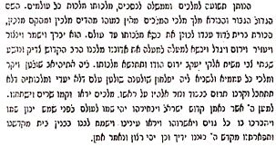

VII. BÖLÜM
Bu eserde bazı olaylara, okuyucularımızı onlara ilgili belgelerle tanıştırarak, değindik.
Aşağıda bunların metinlerini veriyorum.
Belge A{221}
Kardeşlerimiz, İsrailoğulları! Mesih’imizin İzmir’de doğduğunu bilgilerinize arz ederiz. Adı Sabetay Sevi’dir ve kraliyeti yakında gözler önüne serilecek. Kraliyet tacını İsmail’in başından alacak ve kendi başına koyacak, zira krallık ona aittir. Sonra, Mesih’imiz kaybolacak ve kimse nereye gittiğini, yaşıyor mu, öldü mü bilmeyecek. Mesih’imiz, haftanın her günü akarak iri kayalar fırlatıp, Cumartesi günü dinlendiği rivayet olunan Sabation nehrine gidecek. Her kim bir Cumartesi günü oradan geçmeye kalkışırsa, kutsal Cumartesi’ye saygısızlık ettiği için taşlanır. Ancak, Mesih’imiz geçerken Musa ve on kabilesi ile birlikte olacağı için, bir ara dinlenecek ve taşlanmaya ara verilecek. O zaman, on başlı yılanın arabası olduğu tanrısal aslan{222} gökten inerek ateş kusacak ve Mesih’imiz, Musa ve tüm Yahudiler Kudüs’ten gelerek ateşin üstüne çıkacaklar. Yol üzerinde, refakatlerinde denizdeki kum kadar çok bir kalabalıkla birlikte savaşmak üzere gelen Goy ve Magog’a rastlanacak, ama Sabetay Sevi savaşırken ne mızrak ne de kılıç kullanacak, sadece ağzından çıkan soluk dinsizleri öldürecek ve onları tanrının sözü ile yere çarpacak. Mesih’imizin Musa ile birlikte Kudüs’e gelişinde, Tanrı gökyüzünden altınla ve değerli taşlarla kaplı tapınağı indirecek ve tapınak şehri aydınlatacak ve derhal kurbanlar kesilecek. Ve bundan sonra, dünyadaki tüm ölüler dirilecek. Sırlar içinde sır oluşturan bu sözler üzerine kim bir araya gelmek istemez? Ama yakında gözler ölümsüzün vaat edilmiş topraklara dönüşünü görecek. Bu sözleri sizlere yazdım, zira yakında kurtuluşa lâyık olacaksınız.
Nathan Benjamin Eskenazi’nin sözleri bunlar.
Belge B{223}
“Tanrının ilk ve tek oğlu Sabetay Sevi, İsrail’in Mesih’i ve kurtarıcısı, tüm İsrail oğullarına, barış olsun. Ey, İsrailoğulları, bu büyük kurtuluş ve İsrail’i selamlama gününü ve tanrının peygamberleri ve pederlerimiz tarafından, Tanrının sevgili oğlu İsrail için, kederinizin sevince dönüşeceğini ve oruçlarınızın eğlence gününe dönüşeceği hususunda ehle getirilen sözün tutulacağını görmeye lâyık olduğunuza göre, artık ağlamayacaksınız. Tanrı sizlere bu ifade edilmesi imkânsız teselliyi verdiğine göre, asırlardır verilen sözü yerine getirenin şerefine davul çalarak, org çalarak eğlenmeye başlayın. Ayın ilk gününde yapmaya alışık olduğunuz eğlenceyi her gün yapmaya başlayın ve yas tuttuğunuz günleri gelişimin şerefine kutlamaya ayırınız. Hiçbir şeyden korkmayın zira üstünlüğünüz tüm uluslara yayılacak ve sadece dünya üzerindekilere değil, denizin dibindeki yaratıklara bile hâkim olacaksınız, tüm bunlar teselliniz ve sevinmeniz için.
Sabetay Sevi
Belge C{224}

Belge D{225}
Bu belgeyi okuyanlar, dünyayı bölerek ya da daha doğrusu çağının siyasal bölünmelerini muhafaza edip, kendisine hizmet edenlerle ya da propagandasına yardım edenlerle paylaştığı dünyanın belki de tümüne sahip çıkan Sabetay’ın gösterdiği küstahlığın derecesine şaşıracaklardır. Sabetay inananlara her şeyi yapabileceğini kabul ettirdiği mucizeleri gerçekleştirirken kanılarında daha samimî olsaydı kimse bu paylaşıma şaşırmazdı. Buradan hareketle, elini Sultanın başının üzerine götürüp tacını almaktan daha kolay ne olabilirdi? Taç alındıktan sonra mucizeler devam edecekti ve sıra Sultanın çevresindeki yetkililere ve kuvvetlerine gelecekti. Tüm dünya aynı akıbete maruz kalacak ve böylece Sabetay dünyanın sahibi olacaktı. Samimi ya da değil, Sabetay, aşağıdaki gibi, dünyayı paylaşma listesi yapmıştı:
“Ben, David’in oğlu Salomon, tüm dünyanın kralı olmak ve yukarıdakilere, aşağıdakilere, herkese hükmetmek zorundayım. İkametgâhım kutsal topraklarda, dünyanın en güzel yeri olması gereken Kudüs’te olacak.
Yuda’nın kralları, Yuda krallıkları üzerinde bir kral olması gereken erkek kardeşim Eli’nin kumandası altında olmalıdır. İkametgâhı büyük kutsal topraklar şehri olacaktır. Bu şehir Yuda krallarının başkenti olmalıdır. Erkek kardeşim Elie başının üzerinde güzel bir taç taşımalıdır.
İşte inananları ile birlikte Yuda krallarına atfedilen paylaşım listesi:
1 - Okuldaki ilk öğretmenim, İzmirli Ribbi Moşe, Abia’nın kralı, Afrika’daki Sambation nehri kenarında bulunan Khalah ve Habor topraklarında yer alan İskar’ın ve Zaboulon’un tüm topraklarını almalıdır{226}.
2 - Selanikli varlıklı kişi Hilel, Akhaz kralı, tüm Portekiz ve İspanya topraklarını almalıdır.
3 - Marmara kasabasında oturan varlıklı kişi Bezallel, Amon kralı, İsveç ve kuzey topraklarını almalıdır.
4 - İskenderiyeli varlıklı kişi Rafael Yosef, Hizkia kralı, tüm Mısır, Arabistan, Nubie ve Saran (Sahra?) çölünü almalıdır.
5 - Malipapalı varlıklı kişi Avram Rubia, (?) Josia kralı, Küçük Tataristan ve Karadeniz ve çevresindeki toprakları almalıdır.
6 - Afrika’da yer alan Cezayirli varlıklı kişi Zarah, Yoakin kralı, tüm Hazar denizi ve Özbekistan topraklarını almalıdır.
7 - Tunus’ta genç David, Joakim kralı, tüm Yafinou (?) ve Odesa topraklarını ve sınır komşusu şehirleri almalıdır.
8 - Gelibolulu varlıklı kişi Çaleb, Joram kralı, tüm Frenk topraklarını almalıdır.
9 - Kahireli varlıklı kişi Baruh, Yosefat kralı, tüm Fas topraklarını ve batıda yer alan adaları almalıdır.
10 - Varnalı senyör Salamon Joef, Yoakhaz kralı, tüm İran topraklarını almalıdır.
11 - Halepli senyör Naftali, Eli kralı, tüm Fes şehirlerim ve güneyde yer alan şehirleri almalıdır.
12 – Tahat’lı genç İh-Boşet, Jotham kralı, Selanik’te evlendiğim ikinci karımla evlenmeli ve Hindistan ve çevresindeki güney adalarını almalıdır.
13 - Gazze’li senyör Mişel, Menaşe kralı, tüm Çin topraklarını ve Çin sınırındaki büyük adaları almalıdır.
14 - İzmirli Ribbi Yohannan, okuldaki üçüncü öğretmenim, Yosia kralı, Afrika’daki Sambation nehrinin yanında yer alan Khalah ve Habor’un yanındaki Ruben ve Simeon kabilelerinin tüm topraklarını almalıdır.{227}
15 - İzmirli Zadeketh, annem Ester, Atalie kralı, tüm büyük Polonya, küçük Polonya, kita, Ukrayna ve Almanya topraklarını almalıdır.
16 - Gazze’li Ribbi Benyamin, büyük peygamber Nathan’ın babası, Zedekya kralı, tüm İngiltere, Hollanda ve çevresindeki adaları almalıdır.
17 - Safetli senyör Hananya, Roboam kralı, tüm Barbar ülkelerini ve güneyde bulunan şehirleri almalıdır.
18 - İspanya’dan gelen ve kökeni büyük haham Aron’a dayanan Ribbi Cardoso, kısa sürede inşa edilecek olan Tapınağın baş Hahamı olacaktır.
İmza: David Ben Yishay, Aryeh Deve Hay Işaya’nin oğlu David, tanrısal aslan.
***
İşte erkek kardeşim Yosef’in kumandasında olmaları gereken ve saltanat sürecek olan İsrail krallarının listesi: Ben Sabetay Sevi, Mesih, yukarıda ve aşağıda olanlara hükmetmeliyim. İsrail’deki, dünyanın tüm şehirlerinin büyük sahibesi Kudüs’teki yüksek mertebede bulunan ve aziz tahtıma oturacağım.
Mesih’in erkek kardeşi krallar kralı, 19 İsrail kralını yönetecek olan Senyör Yosef’in tahtı Büyük Samarya şehrinde olacak. O İsrail kralları içinde büyük ve üstün bir konuma sahip olmalıdır. O (Yosef) başının üstünde büyük bir taç taşımalıdır.
19 - Selanik’li ikinci kayınpederim Moşe Şlomo Qerido, Akhab kralı, büyük Tataristan topraklarının tümünü almalıdır.
20 - Bulgar şehri Sofya’lı senyör Yuda, Akhia kralı, tüm Amissana (?) topraklarını almalıdır.
21 - Olympos’lu Ribbi Nahon, Elie kralı, tüm Hotitat (?) topraklarını ve kuzeyde yer alan şehirleri almalıdır.
22 - Edirneli senyör Samaria, Beşha kralı, Atriafe (?) topraklarını almalıdır.
23 - Delf ülkesinden senyör Yoanan, Hoşea kralı, bata Hindistan’ı almalıdır.
24 - İzmirli senyör Aaron, Zakarya kralı, Gine topraklarını ve kuzey komşusu şehirleri ve güneye doğru yer alan tüm adaları almalıdır.
25 - Konstantinli genç İzak, Zimri kralı, İzmirli ilk karımla evlenmeli ve tüm Magli (?) topraklarını, kuzeye doğru yer alan toprakları, güneye doğru yer alan doğu Hindistan adalarını almalıdır.
26 - Büyük İstanbul şehri hatibi Ribbi Abraham Yakini, Yeroboam ben Nabat kralı, İstanbul şehri ve Avrupa’daki ve Asya’daki tüm Türk şehirlerini almalıdır.
27 - Damaslı senyör Zakarya, Yehu kralı, tüm Kanarapi Aghini (?) topraklarını ve batıya doğru uzanan şehirleri almalıdır.
28 - Modeneli senyör Akiba, Joakhaz kralı, tüm Florida topraklarını ve batıda yer alan adaları almalıdır.
29 - İranlı, İsfahanlı senyör Eliezer, Yoram kralı, tüm Maguellane (Macellan?) topraklarını ve bu toprakların kuzey batısındaki şehirleri almalıdır.
30 - Alibabalı senyör Yeremya, Yoaş kralı, tüm Plaradi (?) topraklarını ve bu toprakların doğusunda yer alan adaları almalıdır.
31 - Baal Zafonlu Ribbi Nahor, Yeroboam ben Yoaş kralı, Afrika’daki Sambation nehrinin yanında Khalah ve Habor toprakları üzerinde bulunan Levi’nin kabile topraklarını, Bene -Moşe’nin topraklarını, Nafhtali ve Aşefin kabile topraklarını ve Yosef kabilesinin yarısını almalıdır.{228}
32 - İzmirli ilk kayın babam senyör Ribbi Aron, Menahem kralı, Sibirya topraklarını ve çevresini ve kutup denizi adalarını almalıdır.
33 - Mamarcakili (?) senyör Jacob, Nadab kralı, tüm yeni İspanya topraklarını ve İspanya’nın batısında yer alan şehirleri almalıdır.
34 - Hebronlu senyör Bezalel, Omri kralı, tüm Kafkasya topraklarını ve doğuya doğru yer alan adaları almalıdır.
35 - Betlehemli senyör Samuel, Pekahia kralı, tüm Hindistan topraklarını almalıdır.
36 - İskenderiyeli haham, İtalyan menşeli senyör Hoşeya Nantua (Mantua?), Pekhah ben Remalia kralı, Abyssinie topraklarının tümünü ve çevresini, ve çevreleyen denizdeki adaları almalıdır.
37 - İzmir’deki okuldaki ikinci öğretmenim Ribbi Akiva, Shaltim (Shalloum?) kralı, Afrika’daki Sambation nehrinin yanında Khalah ve Ha bor toprakları üzerinde bulunan Gad kabilesi topraklarının tümünü ve Yosef kabilesi topraklarının yarısını almalıdır.8
38 - Bet Levi’nin evlatlarının soyundan gelen Bukyan, Lulyan ve Munkyan adlı üç Yunan peygamber, tapınağın ilk şarkıcılarından olmalılar ve Walin (Gales, Walles?) şehirlerini ve çevresini almalıdırlar. Bu şehirler daima peygamberlere ve dindarlara (Hassidim) tahsis edilmelidir. Bazıları da dullara ve öksüzlere tahsis olunmalıdır.
İmza: David ben Yishay, Aryeh Deve Hay
Isai’nin oğlu David, tanrısal aslan{229}.
Belge E{230}
Yahudi ulusuna, Mesih’in gelmesini ve İsrail’in selamını bekleyen size sonsuz barış ve huzur diliyorum. İngiliz vatandaşı birçok kimseye olan borçlarınızdan haberimiz olduğu için, meşru borçlarınızı ödemenizi emretmek bize doğru geldi. Bize itaat etmeyi ve sizden yapmanızı istediğimiz şeyleri reddederseniz şunu bilmelisiniz ki sevincimize ve krallığımıza bizle birlikte asla uyum sağlayamayacaksınız.
Belge F{231}
Erkeklerin, kadınların ve ailelerin ikamet ettiği İzmir adındaki şehirde yaşayan kardeşlerim ve halkım, din kardeşlerim: Barışın efendisi kral Salomon ve evlatlığı benim tarafımdan gelen barış sizinle birlikte olsun. Gelecek Ab ayının 9’unda, çok lezzetli etler ve çok hoş içkilerle, bol şamdanlı ve ışıklı bir ortamda ve müzik aletlerinin ve şarkıların eşliğinde eğlence düzenleyip bayram etmenizi emrediyorum, çünkü o gün büyük kral, dünya üzerindeki tüm kralların üzerindeki Sabetay Sevi’nin doğum günüdür. Böylece yapacağınız çalışmayla kendinizi bir bayram gününde yapılması gerekenlere göre ayarlayacak ve en güzel giysilerinizi kuşanacaksınız. Dualar hususunda da bayram günlerindeki aynı düzeni takip edin. Farklı olmayan şeylerden konuşuyor olsanız bile, bu gün boyunca Hıristiyanlarla diyalog kurmanıza izin yoktur. Her çeşit çalışma yasaktır ama müzik enstrümanı çalmak serbesttir.
Bu bayram günü için yapacağınız dualarınızın şekli şöyle olacak. Şu sözleri söyledikten sonra: “Sen kutsalsın, ey aziz tanrım” şunu ilave edeceksiniz: “Tüm uluslar içinden bizi seçtin; bizi sevdin ve bizde sevinç buldun; bizi diğer toplumlardan daha çok küçük gördün ama bizi emirlerinle kutsadın ve bizi kendi hizmetine ve kralımızın hizmetine çağırdın ve aziz, yüce ve müthiş ismini hepimizin ortasında bize duyurdun: Ey ulu tanrımız, iyiliğin sayesinde, sevinç ve bayram günlerini, eğlence zamanlarını ve bu teselli gününü, azizliğin debdebeli çağrısında, senin hizmetindeki ilk erkek evlat ve sevgili Mesih Sabetay Sevi’nin, kralımızın doğumu adına, Mısır dışına çıkışımızın anısına kutluyoruz.” Bunun devamında, olarak Tesniye’nin birinci, ikinci ve üçüncü bölümlerini, on yedinci ayete kadar ders olarak{232} okuyacaksınız: Bozmadan ve kusursuz şekilde Tevrat okuyacak beş kişi seçeceksiniz, bayram günleri ve peygamberlerin dersleri{233} için gösterilmiş, her şabatta sinagogda okunan sabah hayır dualarını okuyacaksınız, her şabatta ve debdebeli bayramlarda kullanılan Mussaf adlı duanızdan önce Yeremya’nın (Jeremi) otuz birinci bölümünü tekrar edeceksiniz. Ek adak yerine, onun yerine Tehilim (Mezmurlar) getirildiği için, yüksek sesle aziz bir uyum içinde 95’inci Mezamiri okuyacaksınız ve sabahın ilk lütuflarının adına 91’inci Mezamiri şarkı olarak söyledikten ve 98’inciyi söylemeden hemen önce, 132’nciyi tekrar edeceksiniz, ancak, “Düşmanlarına gelince, onları utançla kaplayacağım, ama onun üzerinde çelenk çiçek verecek” denilen son ayetteki “onun üzerinde” yerine “çok yükseğin üzerinde” diyeceksiniz. Bundan sonra 126’ncı Mezamir gelecek ve sonra da 113’ten itibaren 119’a kadar olan Mezamirler.
Yortu ya da arifesinde{234} tanrıya şarap adama esnasında, ilk erkek evladın ve hizmetçin Sabetay Sevi’nin, kralımızın doğumundan bahsederken şu hayır duasını söyleyeceksiniz: “Dünyanın kralı, bizi yaşatan, bizi müdafaa edip hayatımızı bu güne kadar koruyan, ey kutsal Tanrım.” Bu günün arifesinde, sabahın lütfu için işaretlenmiş 81’inci, 132’nci ve 126’ncı Mezamirleri de okuyacaksınız. Bu gün, yüzyıllar boyunca debdebeli bir gün ve İsrailoğulları ile benim aramda kalıcı bir tanıklık olsun.
Audite audiendo et manducate bonum.
Belge G{235}
Bu yılın 22 Hesvan’ı.
Senyörlerimizin senyörü, krallarımızın kralı, İsrail öğrencilerini toplayan, esaretimizden bizi kurtaran, en büyük insan, Yakup’un tanrısının Mesihi, sayesinde şerefin göklere yükseldiği ve Hükümdarlığın kısa zamanda yükselip ebediyen kalıcı olduğu, gerçek Mesih, tanrısal aslan, Sabetay Sevi, Âmin. Ellerini öptükten ve ayaklarınızdaki tozu sildikten sonra, krallar kralına olan görevim başlıyor, ki onun tarafından Majeste göklere çıkabilir ve Hükümdarlık büyüyebilir. Bu mektup, azizliğinizin güzelliği ile süslenmiş ulu üstünlük taşıyan bölge hükümdarına, kralın kanun ve sözlerinin yüzümüzü aydınlattığını bildirmek içindir. Bu gün İsrail’de debdebeli bir bayram ve yöneticilerimize bir ışık günüydü. Zira bizim görevimiz olduğuna göre, emirlerinizi alır almaz uygulamaya koyulduk. Birçok acayip şey işittik ama cesaretimiz var ve kalbimiz bir aslanın kalbi gibi, yaptıklarınızın nedenini size sormamız gerekiyor, zira sizin eserleriniz olağanüstü mükemmel ve size olan sadakatimiz çok dayanıklı, çünkü biz hayatımızı sizin adınızın azizliğine adadık. Hâlihazırda Şam’a varmış bulunuyoruz, orada kısa süre sonra İskenderun’a{236} geçmeye karar verdik, çünkü siz bu vesileyle çıkıp aynen hayatın kralının yüzündeki ışık gibi olan, Tanrının ışıktan yüzünü görmemizi emrettiniz, ve biz, sizin hizmetçilerinizin hizmetçileriyiz, ayağınızdaki tozları sileceğiz, Majesteye ekselanslarınız ve şerefiniz için yalvararak, bize karşı özen göstermenizi, ve güçlü sağ elinizin kuvvetiyle bize yardım etmenizi ve önümüzdeki yolu kısaltmanızı istiyoruz. Günahkârlar bize zarar vermesin diye gözlerimizi bize yardım etmek ve bizi kurtarmak için can atan ve yüreklerimizi kabartan Jah’a doğru çevirdik ve kendimizden vermeye hazırız, zira sizin gölgenizde olmaya lâyık olmamız için bize demirden pençeler verecek. Bunlar ayaklarınız altında çiğnenmek için secdeye varan hizmetçilerinizin hizmetçisinin sözleridir.
Nathan BENJAMİN
Belge H{237}
Kalan Yahudilere bitimsiz barış. Bu sözler Şam’a geldiğimi size haber vermek için, ve işte, senyörümüzün yüzünü göreceğim. Majeste ondan yücelecek, zira o ulu krallar kralıdır, hükümdarlık onunla büyüyecek. Ona on iki kişi seçmemizi bize ve on iki kabileye emretti ve yerine getirdik ve halen birlikte görünmek için İskenderun’a onun emirleriyle yürüyoruz, esaslı dostlarından bazıları da oraya geliyor, onlara da orada toplanma izni verdi.
Şimdi, Senyörümüzün garip şeyler söylediğini duymuş olsanız bile korkmamanız ve cesaretinizi kaybetmemeniz için size yazıyorum. Aksine, güveninizi arttırın, çünkü yaptığı her şey hayranlığa değer ve gizlidir. İnsan sağduyusu yaptıklarını anlayamaz. Kim ne kadar derin olduğunu araştırabilir ki? Kısa sürede her şey size açıkça ilan edilecek ve o zaman her şeyi görüp takdir edeceksiniz. Zira size kendisi bilgi verecek. Bekleyip, gerçek Mesih’in selamını almaya gelenlere ne mutlu. Yakında hükümdarlığını ilan edip üzerimizdeki gücünü tanıtacak.
NATHAN
Belge I{238}
Kurban etme gücü ve İzmir şehrinde ikamet eden tecrübeli bilginleri, soylu yöneticileri ve prensleri olan sizi yüce kuvvete sahip olan korusun, âmin; çünkü o böyle istiyor.
Size gönderdiğimiz bu mektuplar sizin aziz şehrinizde kulağımıza çalınan birkaç kargaşa ve tatsız olayla ilgilidir. Zira sizin aranızda bazı kişiler bir kralımızın yaşadığını söyleyerek yanılgıya düşüyorlar. Her şabat günü onu, sinagoglarında kutsuyorlar ve bu kişi tarafından bazı günler için icat edilen Mezamirleri onun kuralları ve yöntemlerini kullanarak söylüyorlar. Bu arada inatçılık da yapıyorlar. Onun yüzünden ruhlarımızda ne uçurumlar meydana geldiğini biliyorsunuz. Zira tanrının sonsuz acıma duygusu ve bize yardım eden dualarımız kabul olmadığı zaman, düşmanlarımız İsrail’in ayağını kopartmışlardı. Bununla birlikte, yararlı olmaktan çok uzak olduğu gibi, ayrıca kötülükten başka bir şey üretmeyen şeyler üzerinde inat ediyorsunuz, oysa biz sizi bu kötülüklerden koruması için tanrıya dua ediyoruz. O halde geri dönün, zira takip ettiğiniz yol kusursuz yol değil. Tacı eski törelere ve atalarınızın eski adetlerine ve kullanımına, yasaya iade edin ve bir daha da uzaklaşmayın.
O halde size yetkinizi kullanmanızı ve hatta aforozları ve diğer cezaları da dahil ederek, gerek bu adamın kendi ağzından gerekse başkalarının ağzından ürettiği bu emirlerin ve duaların tümünü iptal etmenizi emrediyoruz: Hepsi silinsin ve bir daha kalplerinize girmesin. Atalarınızın eski emirlerini yargılayın, her şabat günü aynı duaları tekrar edin ve örf ve adetlerden alınan dersleri, krallar için, zorba hükümdarlar için olanları vs. okuyun. Sultan Mehmet’i{239} kutsayın, zira bu günlerde İsrail’e büyük bir selam göndermiştir ve ona isyan etme talihsizliğini göstermeyin. Olanlardan sonra en küçük bir hareketin şüphe uyandıracak bir neden teşkil edeceğini ve çevrenizdeki en değerli varlıklarınız için kaçınılmaz bir yıkıma neden olacağınızı unutmayın. Böylece, bu adamdan ve adından uzaklaşın ve adını ağzınıza dahi almayın. Bu hususta bize itaat etmeyi reddederseniz, kendimizi ödevimizi yapmaya adadığımızı unutmayın, nasihatlarımızı dinlemek istemeyenler ve itaat etmeyenler hakkında tam olarak bilgi vereceğiz. Ama tanrının hayır duası bizi dinleyip emrimize itaat edenlerin üzerinde olsun. Bu sözler huzurunuzdan ve iyiliğinizden başka bir şey istemeyenlerin ve bu mektubu imzalayanların sözleridir.
İstanbul, Şevat ayının 5. Günü, Pazar.
İmza: Hananya ben Yakar’ın oğlu Yom Tov, Izak Alnakagua, Yosef Kazabi, Menase Barudo, Samuel oğlu Kaleb, Eli- ezer Kasti, Eliezer Gerşon, Yosef Akohen, Eliezer Aluf.
Belge J{240}
İsrail’in çobanları ve yöneticileri olan sizler, Evrenin ulu tanrısı adına İzmir ilinde oturarak, İsrail’in annesi olan, prenslerini, bağışçılarını ve özellikle derin erdemleriyle ve uzun tecrübeleriyle saygı duyulan kişileri, Senyörden, tanrımızdan onun karşısında yaşatmasını ve sizi barış bolluğu ‘içinde sevindirmesini isteyin, âmin.
Senyörün arzusu bu şekilde olsun.
Bunları size yazmamızın nedeni, Gazze’de bulunan Nathan Benjamin adındaki bilgin kişinin yayınladığı dünyayı sarsan doktrinlerden haberdar olduğumuzu size bildirmektir. Şimdi aldığımız habere göre aynı şahıs birkaç gün önce İskenderun’a gitmek üzere Gazze’den ayrılmıştır ve oradan da İzmir’e gitmek zorundadır. Daha sonra ise İstanbul’a ya da Edirne’ye geçmeyi düşünmektedir. Bir insanın bilerek cehennem ateşinin alevlerinin içine girmek istemesi bize çok etkileyici geliyor. Ancak, bunun gerçekleşmesinden korkmamız gerekiyor, zira insanın ayağı onu daima zarara doğru götürür. Bu nedenle, bu mektubu imzalayan biz, olgun yargılarınıza sığınıp onun bu seyahate devam etmemesini ve onu dönmeye mecbur etmenizi emrediyoruz. Zira buraya gelir gelmez, zaten herkesin rüyalarında yeni bir krallığı gördüğü bir ortamda, şüphesiz aynı kargaşaları başlatacaktır ve şunu da unutmayın ki her gün mucize olmaz. Tanrı biliyor ki, maalesef bu adam gelir gelmez tanrının halkı her tarafta imha edilecek ve ilk imha edilecek kişi de o olacak. Tanrı yardım etsin ve aklı başında olsun, zira günümüzün gelişen dünyasında yapılan en küçük hata büyüyor. Karışıklıkların bizi ne zor durumlara sürüklediğini hatırlayın ve bundan sonra başımıza gelecek dertlerin daha etkili olmasından korkun. Bu nedenle, onun seyahatini engellemek için, yetkinizi ve bizim yetkimizi kullanın. Yasalarımızın benzer durumlar için elverdiği tüm sınırlamalardan yararlanın ve onun kendisine refakat edenlerle birlikte geri dönmelerini sağlayın. Size tepki gösterir ve itaatsizlik ederse, ona vazifesini hatırlatmak için yasalarımız yeterince kuvvetlidir. Böylesi onun için ve İsrail için hayırlı olacaktır.
Tanrı aşkı için, bu sözlerimiz kulaklarınıza girsin ve bunların boş ve nafile şeyler olduğunu tahayyül etmeyin. Onun ve siz Yahudilerin hayatının buna bağlı olduğunu unutmayın. Tanrı bizi korumak istiyor ve İsrail halkına acımak istiyor, âmin, istediği şeyler gerçekleşsin. Huzurunuzdan başka bir şey istemeyen kişiler tarafından yazılmıştır.
İmza: Hananya Yakar’ın oğlu Yom Tov, Mois Benveniste, İzak Alnakagua, Yoset Kazabi, Samuel Akasına, Haham Sa- muel’in oğlu Kaleb, Mois Barudo, Eliezer Aluf, Yeşua Rafael Benveniste.